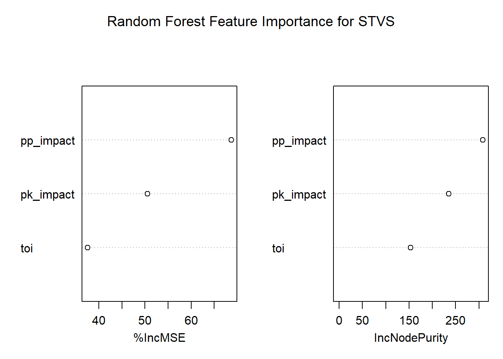

RQ2 — Predicting Special Teams Versatility Score (STVS)
1 1. Introduction
This section provides the detailed empirical analysis for Research Question 2, focusing on identifying players who demonstrate strong versatility on special teams. Rather than evaluating power-play (PP) and penalty-kill (PK) performance in isolation, we construct a unified metric—the Special Teams Versatility Score (STVS)—that captures both offensive and defensive contributions.
2 2. Data Loading and Preparation
2.1 2.1 Load Libraries
Show / Hide Code
library(tidyverse)
Warning: package 'tidyverse' was built under R version 4.5.2
Warning: package 'ggplot2' was built under R version 4.5.2
Warning: package 'tibble' was built under R version 4.5.2
Warning: package 'tidyr' was built under R version 4.5.2
Warning: package 'readr' was built under R version 4.5.2
Warning: package 'purrr' was built under R version 4.5.2
Warning: package 'dplyr' was built under R version 4.5.2
Warning: package 'stringr' was built under R version 4.5.2
Warning: package 'forcats' was built under R version 4.5.2
Warning: package 'lubridate' was built under R version 4.5.2
── Attaching core tidyverse packages ──────────────────────── tidyverse 2.0.0 ──
✔ dplyr 1.1.4 ✔ readr 2.1.6
✔ forcats 1.0.1 ✔ stringr 1.6.0
✔ ggplot2 4.0.1 ✔ tibble 3.3.0
✔ lubridate 1.9.4 ✔ tidyr 1.3.1
✔ purrr 1.2.0
── Conflicts ────────────────────────────────────────── tidyverse_conflicts() ──
✖ dplyr::filter() masks stats::filter()
✖ dplyr::lag() masks stats::lag()
ℹ Use the conflicted package (<http://conflicted.r-lib.org/>) to force all conflicts to become errors
Show / Hide Code
library(knitr)
Warning: package 'knitr' was built under R version 4.5.2
Show / Hide Code
library(randomForest)
Warning: package 'randomForest' was built under R version 4.5.2
randomForest 4.7-1.2
Type rfNews() to see new features/changes/bug fixes.
Attaching package: 'randomForest'
The following object is masked from 'package:dplyr':
combine
The following object is masked from 'package:ggplot2':
margin
Rows: 4600 Columns: 154
── Column specification ────────────────────────────────────────────────────────
Delimiter: ","
chr (4): name, team, position, situation
dbl (150): playerId, season, games_played, icetime, shifts, gameScore, onIce...
ℹ Use `spec()` to retrieve the full column specification for this data.
ℹ Specify the column types or set `show_col_types = FALSE` to quiet this message.
2.3 2.3 Standardize Naming Conventions
Show / Hide Code
df <- df %>%rename(player = name,toi = icetime )
3 3. Variable Selection and Validation
3.1 3.1 Required Columns
We use on-ice expected-goals metrics as proxies for special-teams performance.
ggplot(df, aes(x = STVS)) +geom_histogram(bins =40, fill ="darkorange", alpha =0.75) +labs(title ="Distribution of Special Teams Versatility Score",x ="STVS",y ="Number of Players" ) +theme_minimal()
5.2 5.2 Top Players by STVS
Show / Hide Code
df %>%arrange(desc(STVS)) %>%select(player, season, STVS, pp_impact, pk_impact) %>%head(15) %>%kable(caption ="Top Players by Special Teams Versatility Score")
varImpPlot(rf_model, main ="Random Forest Feature Importance for STVS")

7 7. Interpretation
The Random Forest model highlights both offensive (PP) and defensive (PK) components as critical drivers of special-teams versatility. Time on ice further moderates these effects, reflecting coaching trust and deployment context.
Players with high STVS scores are therefore those who consistently contribute under both numerical advantage and disadvantage.
8 8. Conclusion
RQ2 demonstrates that special-teams versatility can be quantified using a composite expected-goals-based metric. The STVS framework provides teams with a data-driven approach to identifying multi-role contributors and optimizing lineup decisions.